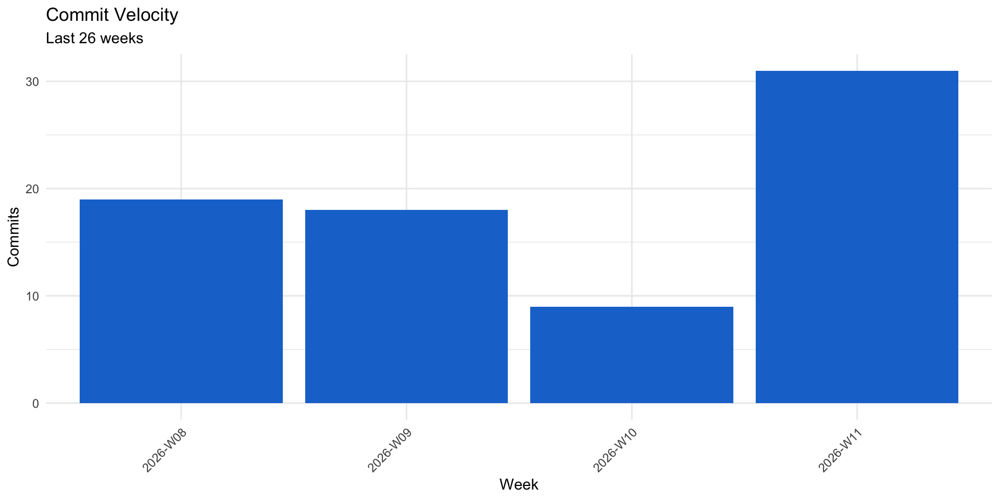

Dependency graph not available. Run tar_make() first.
Target dependency graph showing data flow across the micromort pipeline.
This vignette tracks the health and evolution of the micromort pipeline, codebase, and GitHub activity. All data is pre-computed via targets — zero inline computation.
Dependency graph not available. Run tar_make() first.
Target dependency graph showing data flow across the micromort pipeline.
